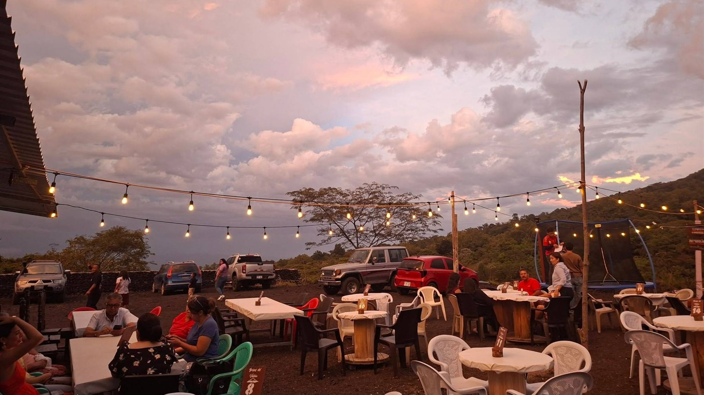
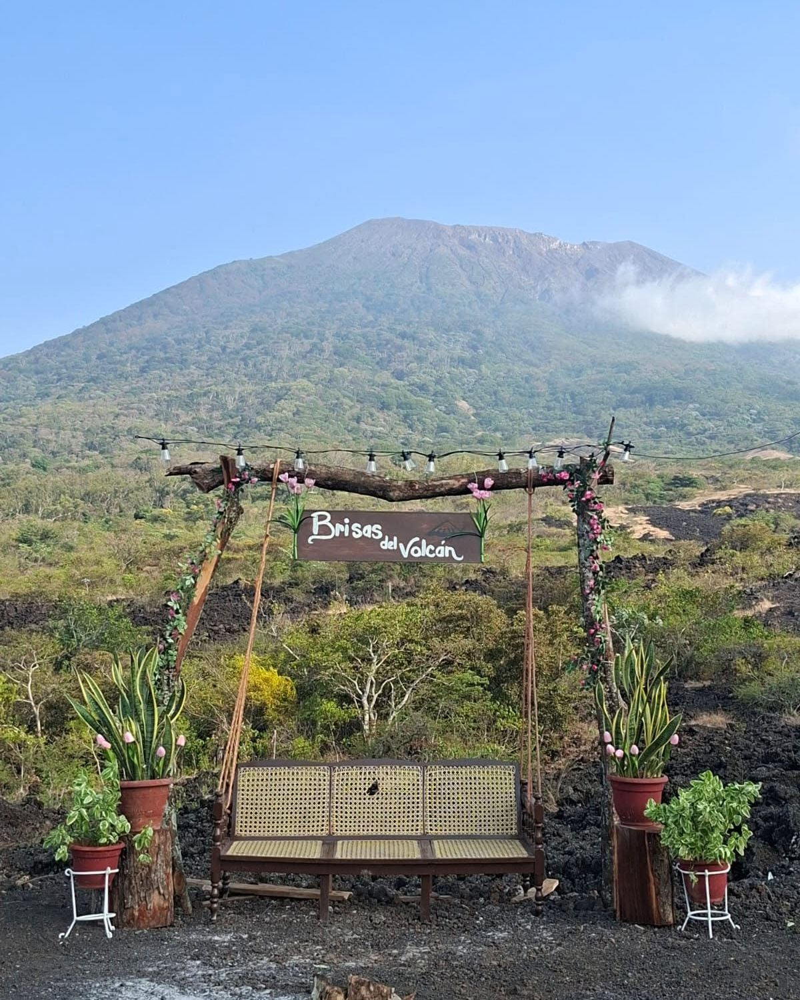
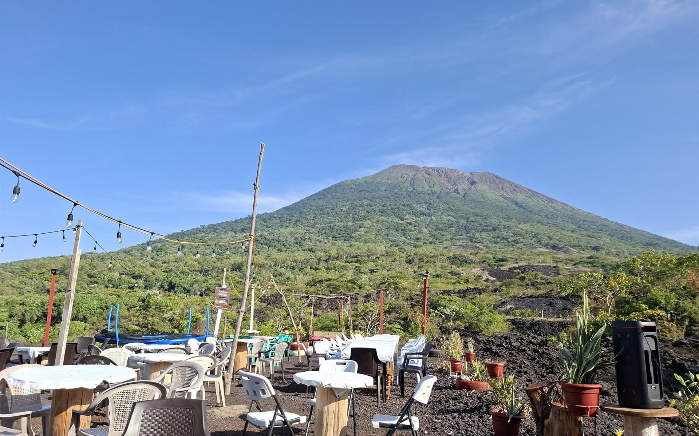
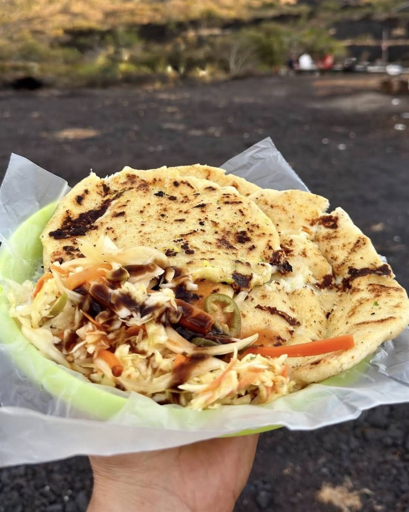
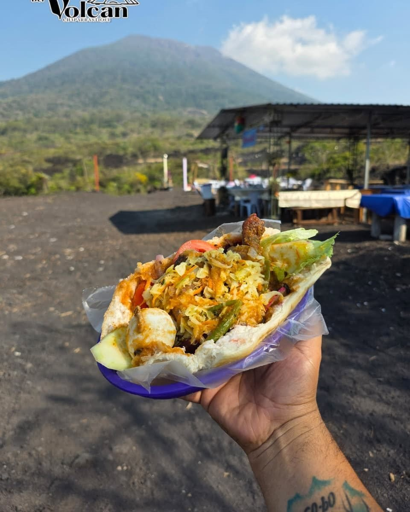
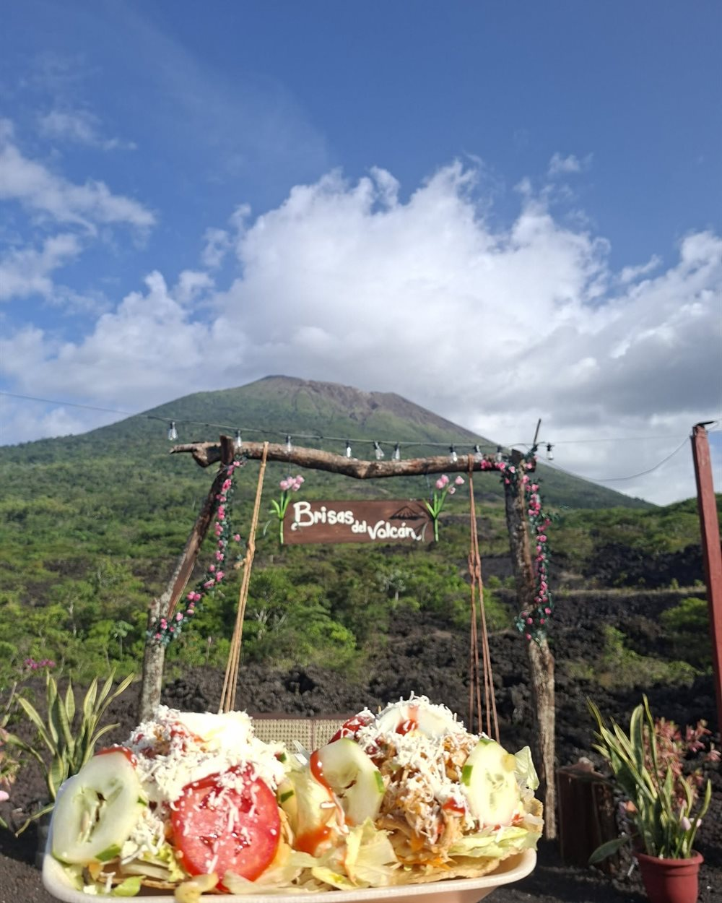
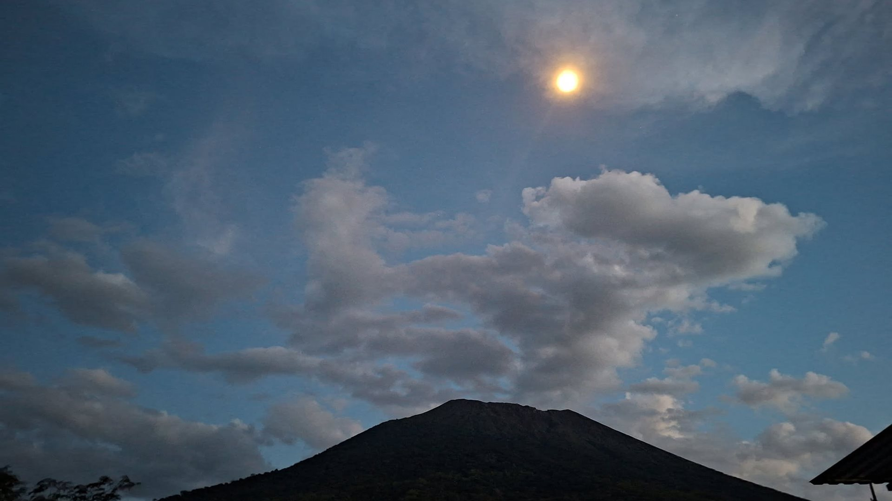
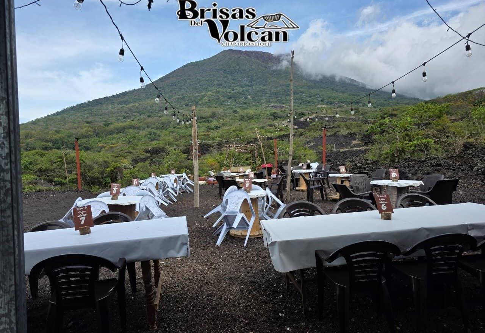

Foto
Nombre del integrante
Fundador / integrante de la familia

Restaurante familiar · San Miguel, El Salvador
“Sabores de familia, bajo la mirada del Chaparrastique.”
Un lugar nacido del esfuerzo, la unión y los sueños de la familia Ortega.

Nuestra historia
Nacimos de un sueño familiar.
En las faldas del majestuoso volcán Chaparrastique nació Brisas del Volcán Chaparrastique, un proyecto construido con el esfuerzo, la unión y los sueños de la familia Ortega.
Más que un restaurante, somos una familia que decidió convertir sus ganas de crecer y superarse en un lugar donde compartir nuestra tierra, nuestra gastronomía y nuestra forma de recibir a quienes nos visitan.
Cada plato, cada sonrisa y cada momento que compartimos representa una parte de nuestra historia.
Somos familia. Somos esfuerzo. Somos tradición.
Somos Brisas del Volcán Chaparrastique.
El origen de todo lo que hacemos.
El trabajo diario que nos sostiene.
Las ganas de superarnos juntos.
Los sabores de nuestra tierra.
Lo que seguimos construyendo.
Detrás de Brisas
Brisas del Volcán Chaparrastique nació como un proyecto familiar. Detrás de cada mesa servida hay una familia que trabaja unida para recibirte como en casa.
Fundador / integrante de la familia
Fundador / integrante de la familia
Fundador / integrante de la familia
Fundador / integrante de la familia

El volcán Chaparrastique
El Volcán de San Miguel, conocido como Chaparrastique, es uno de los volcanes más representativos de El Salvador.
Su silueta cónica domina el paisaje del oriente del país y es parte de la identidad de San Miguel. A sus pies crecen los cultivos, la vegetación y las comunidades que conviven con él todos los días, y es bajo su mirada donde nuestra familia decidió poner su mesa.
El Chaparrastique es un volcán activo y su estado puede cambiar. Esta página no informa sobre su actividad actual: para información actualizada consulta a las autoridades oficiales de El Salvador, como el Ministerio de Medio Ambiente y Recursos Naturales (MARN) y la Dirección General de Protección Civil.
Gastronomía
Pupusas de receta original y sabor salvadoreño para compartir en familia, con la mejor vista al volcán.



Chocolate de tablilla, café y capuchino para el clima fresco; sodas y refrescos naturales.
Ver menú
Aquí las tardes tienen otro sabor.
Galería
Toca cualquier fotografía para verla en grande.
Experiencias

Reseñas
/ 5
Sin reseñas
Aún no hay reseñas publicadas.
Ubicación
Te esperamos en las faldas del Chaparrastique, en San Miguel, El Salvador.
El ingreso y uso de las instalaciones es exclusivo por consumo local. No se permite el ingreso de alimentos o bebidas ajenos al negocio.
🔴 PEGAR AQUÍ EL MAPA DE GOOGLE MAPS
Configura googleMapsEmbed en js/script.js o pega aquí el iframe de Google Maps.
Te esperamos
Una mesa, una familia y una historia que queremos compartir contigo.